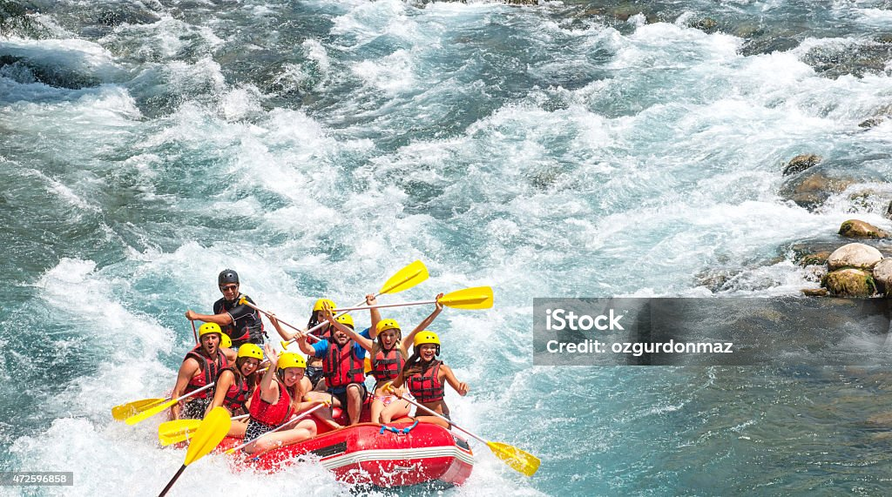
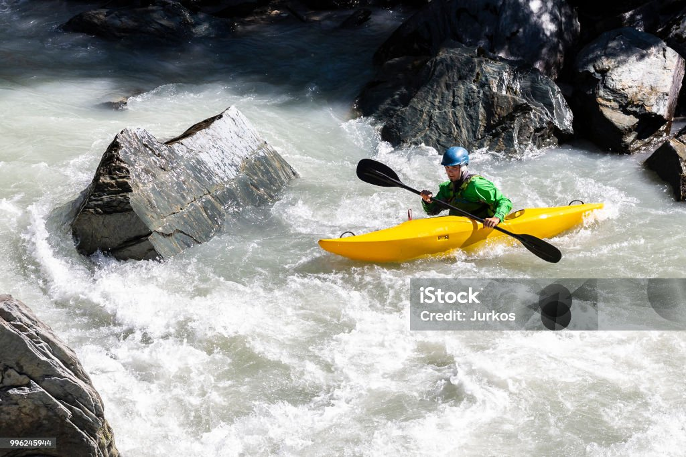
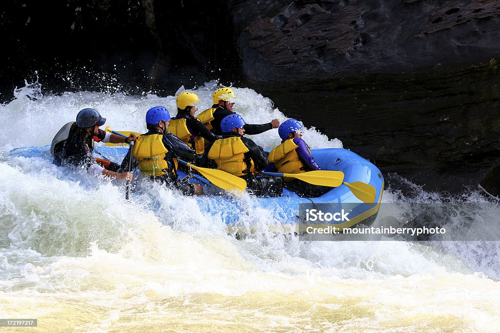
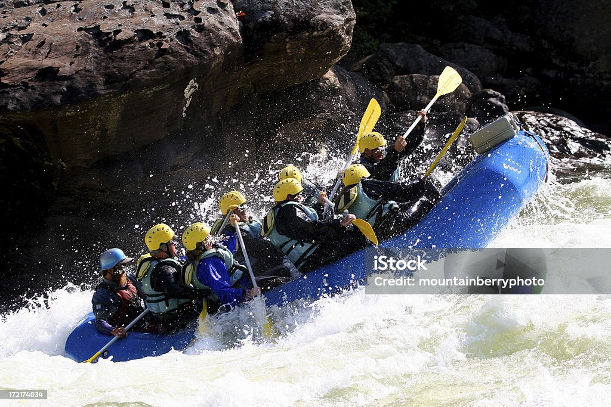
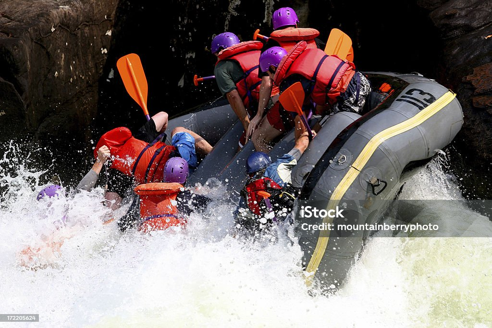

Wonderful trips await you!
"Group of people enjoying an adventurous white water rafting trip, navigating through the rapids with excitement and teamwork. Everyone is wearing safety gear, including helmets and life jackets, and the vibrant expressions on their faces reflect the thrill and fun of the outdoor activity. The scenic background includes a flowing river surrounded by lush greenery and rocky terrains, adding to the beauty and exhilaration of the experience."
"A lively group of rafters paddling down a fast-moving river, their faces lit with joy and exhilaration. Clad in colorful helmets and life vests, they work in unison to steer their inflatable raft through the frothy white rapids. The stunning natural backdrop of dense forest and rugged rocks frames their adventure, highlighting the camaraderie and excitement of the journey."
"An enthusiastic team of adventurers braving the churning waters on a white water rafting excursion. Each member is focused and engaged, their coordinated efforts visible as they tackle the turbulent waves. "
 